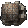
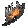
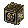
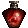
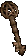
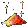
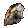
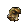
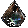

01 / QUALITY OF LIFE
界面与便利
- 画面
- 支持宽屏、60 帧以上的帧率和高清文字。
- 仓库与方块
- 储藏箱为 10×15 格，赫拉迪姆方块为 4×4 格；PD2 官服提供 9 页共享仓库与材料标签。
- 物品栏
- 扩展为 10×8 格，下方四排是护身符生效区。
- 材料堆叠
- 宝石、符文、精华、超级钥匙和器官均可堆叠。
- 便利操作
- 自动拾取金币、物品过滤与快速施法；PD2 官服还提供全球天梯。
✦ YOUR FIRST STEPS
Project Diablo 2 在《暗黑破坏神 2：毁灭之王》的基础上调整了游戏体验、战斗平衡与终局玩法。流放圣所建立在这些基础之上，并进一步扩展了玩法。
了解更多：档案馆新手教程 ↗ · PD2 中文维基 · 通用改动 ↗
流放圣所基于 Project Diablo 2，扩展了角色成长、装备打造与终局内容。从推进剧情到挑战地图，可以循着下面的路线开始。
首次击败普通巴尔可获得升华石碑与 
留意暗金和套装装备，分解后获得机遇碎片或崇高碎片；积攒碎片合成宝珠，为想要的装备寻找更多可能。
查看宝珠规则 ↗通关地狱后可从 T1 地图开始，逐步挑战更高阶内容。使用符文石、制图凿子等通货定制地图，探索华丽护身符与神话珠宝。
了解刷图系统 ↗击败地狱难度的赫法斯托获得炼狱熔炉，再从深渊怪物收集 
萃取宝珠可移除未腐化装备上的镶嵌物，并保留装备本身。
卡牌上会标明兑换所需数量；集齐后放入赫拉迪姆方块，换取对应的奖励。
查看命运卡资料 ↗✦ SPOILS OF THE CURSE
继承的基础设定与诅咒模式调整后的数值，已合并在这里。掉率仅适用于所列难度、怪物或区域；具体触发条件以档案馆与游戏内为准。
基础规则改善了暗金掉落系数，首领、精英、暗金及超级暗金怪物有更高几率掉落暗金。
地狱难度经典内容和 T1–T3 地图生成掉落时，符文降级几率降至原来的 1/5；女伯爵必定掉落 3 枚符文。
诅咒模式中的恐惧掉率相对标准规则降低 40%；富饶恐惧已从掉落表移除。
选择条目展开详细数值。例如，1:10,000 比 1:1,000 更稀有。
表格可左右滑动查看。
| 物品 | 普通 | 噩梦 | 地狱 |
|---|---|---|---|
| 拉苏克谜片 | 1:6,000 | 1:3,000 | 1:1,000 |
 拉苏克谜盒 | 不掉落 | 1:40,000 | 1:20,000 |
| 萃取宝珠 | 不掉落 | 1:30,000 | 1:10,000 |
| 恶魔方块 | 1:30,000 | 1:20,000 | 1:10,000 |
表格可左右滑动查看。
| 物品 | 难度 / 来源 | 掉率 |
|---|---|---|
| 骷髅钥匙 | 地狱难度 | 1:100,000 |
| 赫拉迪姆导航器 | 地狱难度 | 1:100,000 |
| 赫拉迪姆年鉴 | 地狱难度 | 1:100,000 |
| 莉莉丝之镜 | 地狱难度 | 1:1,500,000 |
| 圣光之瓶 | 地狱难度 | 1:300,000 |
| 世界之石碎片 | 腐化区域 | 1:75 |
| 暗金地图 | 地狱怪物 | 1:75,000 |
| 暗金地图 | 地图首领 | 1:4,500 |
表格可左右滑动查看。
| 物品 | 难度 / 来源 | 掉率 |
|---|---|---|
| 拉玛下颌骨 | 地狱难度 | 1:4,000 |
| 超级远古碎片 | 地图 | 1:3,400 |
| 恶魔徽章 | 地狱的阿巴顿、阿克汉深渊、炼狱深渊怪物 | 1:800 |
| 背信护身符 （越界护符） | 地狱腐化区域的怪物 | 1:600 |
| 恶意之肉 | 恶魔怪物 | 1:4,000 |
| 纯粹恶魔精华 （纯粹的恶魔精髓） | 地图首领 | 约 40% |
 首恶之魂 （原罪之魂） | 地狱墨菲斯托 / 迪亚波罗 / 巴尔 | 约 29% / 31% / 33% |
表格可左右滑动查看。
| 物品 | 来源 | 掉率 |
|---|---|---|
 恐惧之钥 | 女伯爵、血鸟 | 29% |
| 憎恨之钥 | 召唤师、血巫 | 31% |
| 毁灭之钥 | 尼拉塞克、依祖尔 | 29% |
| 扭曲苦痛精华 | 安达利尔，所有难度 | 28%；任务 35%，地狱任务 36% |
| 扭曲苦痛精华 | 督瑞尔，所有难度 | 28%；任务 35% |
| 充能憎恨精华 | 墨菲斯托，所有难度 | 28%；任务 31% |
 燃烧恐惧精华 | 迪亚波罗，所有难度 | 28%；任务 31% |
| 溃烂毁灭精华 | 巴尔，地狱难度 | 28%；任务 31% |
任务掉率指档案馆所列的任务击杀数值。档案馆仅列出巴尔在地狱难度的精华掉率。
✦ FORGE YOUR FATE
诅咒模式替换了部分通货和配方。投入珍贵装备之前，先了解可能的结果。
尝试将底材转为对应的暗金物品。成功时，若存在多个结果，将依照各自权重决定产出。

机遇碎片，10 个碎片合成 1 个机遇宝珠；分解暗金武器、护甲、戒指或项链时需要钥匙。失败会摧毁物品并变为钥匙；失败概率取决于底材。
尝试将底材转为对应的套装物品。诅咒模式重新启用这项打造方式。

崇高碎片，每次获得 1 个；10 个碎片合成 1 个崇高宝珠。失败概率为 50%；失败会摧毁物品并变为钥匙。
装备的普通、扩展、精英是底材阶级，并非游戏难度。合成结果取决于该底材是否有可用的目标物品。
指定与随机地狱锻铸暗金配方在诅咒模式下使用机遇宝珠。材料数量和对应规则见炼狱熔炉页面。
查看炼狱熔炉配方 ↗降级范围为 1–21 号符文：2–21 号可作为输入，1 号是最低阶符文，只能作为降级结果。22 号及以上符文无法降级。
赫拉迪姆方块配方
符文 × 1 + 钥匙 × 1 → 低一号符文 × 1
配方为幻化之刃 + 5 个机遇宝珠 + 1 枚永恒之币。
仅在地图中掉落，占用 3 × 1 横向格子。可出现超大型护身符的所有词缀，还有数值更高的专属词缀阶级；物品等级影响可获得的词缀，可用常规护身符配方重掷。
仅在地图中掉落，可出现普通珠宝的所有词缀，还有数值更高的专属词缀阶级；物品等级影响可获得的词缀，也可用常规珠宝配方重掷。神话珠宝不同于被禁用的神话宝珠。
普通阶级最多 1 孔、扩展阶级最多 2 孔、精英阶级最多 3 孔。鞋中的镶嵌物按头盔或身体护甲的效果计算。
✦ BEYOND THE BATTLE
这些基础机制同样适用于当前服务器：从佣兵能力到商人、物品和怪物的变化。
档案馆所列基础属性与每级成长；技能等级为所列的基础等级。
表格可左右滑动查看。
| 佣兵 | 基础生命 | 每级生命 | 基础防御 | 每级防御 | 能力 |
|---|---|---|---|---|---|
| 第一幕 | 1,170 | 36 | 1,004 | 26 | 回避与闪避基础等级 13 |
| 第二幕 | 1,787 | 50 | 1,438 | 36 | 战斗反射基础等级 15 |
| 第三幕 | 1,307 | 34 | 832 | 32 | 所有变体使用 12 级冰寒装甲 |
| 第四幕 | 1,307 | 34 | 832 | 32 | 使用白骨装甲的几率为 25% |
| 第五幕 | 1,787 | 54 | 1,438 | 36 | 铁布衫基础等级 10 |
阿卡拉以 1 金币出售赦免令牌；永恒之币可从多位商人处以 250,000 金币购买。安亚以 500,000 金币出售 
行动速度以乘算方式影响总跑步 / 行走速度，并降低达到下一攻击速度档位所需的攻速。地狱的非首领暗金怪物，以及精英怪物的伤害加成系数均为 80%。
这三种宝箱都需在方块中使用两次。吉德的宝箱获得随机一种完美宝石 50 颗；恰西的宝箱获得一组 5 个随机制作灌注；制图师之箱获得一组 5 个随机符文石、凿子或催化碎片。它们可在地狱第 1–5 幕、T1–T4 地图及指定地图事件中掉落。